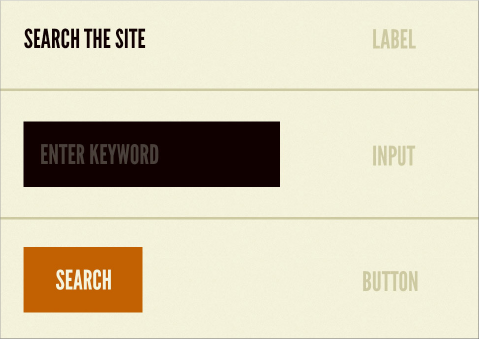
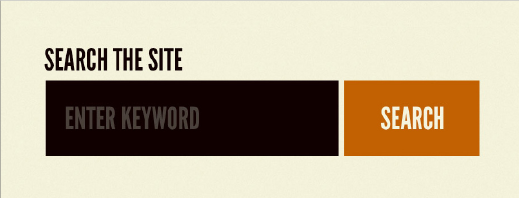
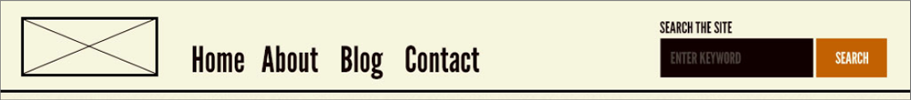
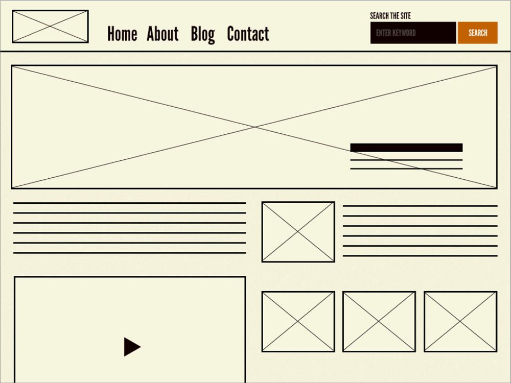
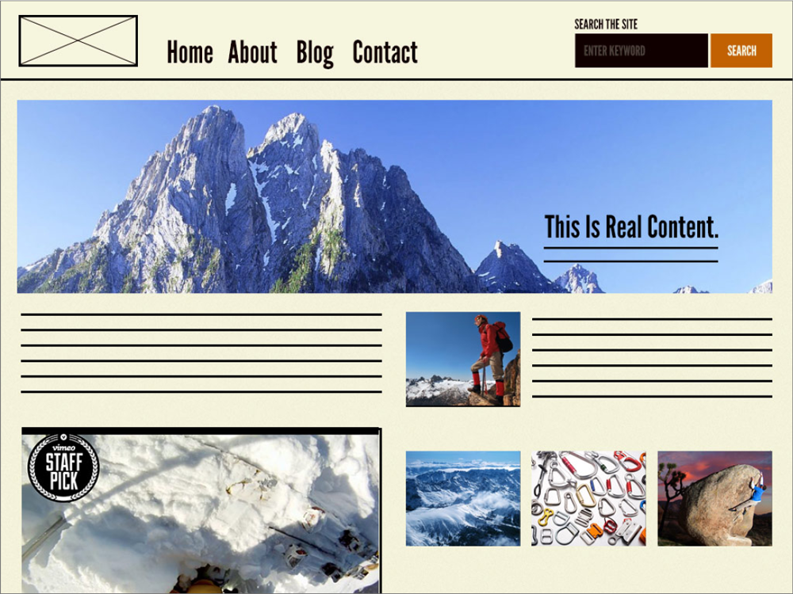

Modulares Design ist eine innovative Herangehensweise, die nicht auf pixelgenaue Website-Gestaltung abzielt, sondern ein Design-System schafft, das die
Gestaltung für einzelne Elemente festlegt. Ein Beispiel für diese Methode ist das Atomic Design, das davon ausgeht, bei der Gestaltung mit den kleinsten
Elementen zu beginnen und diese schrittweise zu größeren Elementen zusammenzusetzen.
Atome

Moleküle

Organismen
Templates
Seiten
Ein konkretes Beispiel für die Umsetzung von modularem Design ist Patternlab.io, wo man entweder vorhandene Websites kopieren oder selbst CSS schreiben kann, um das Design schrittweise aufzubauen. Dieser Ansatz ermöglicht eine effiziente und flexible Entwicklung, da einzelne Module wiederverwendet und leicht angepasst werden können.